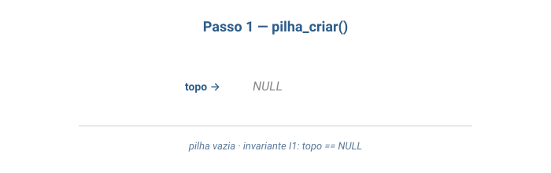
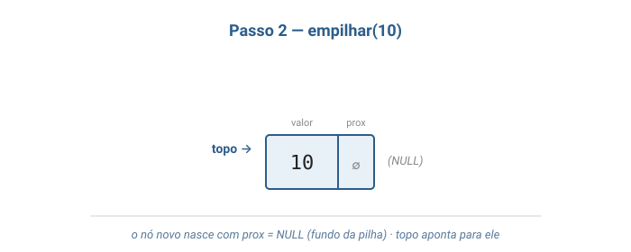
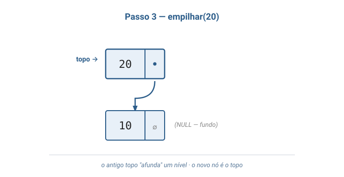
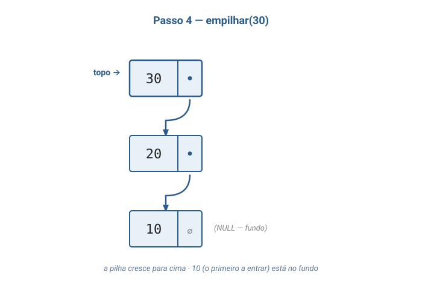
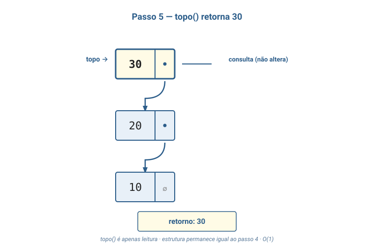
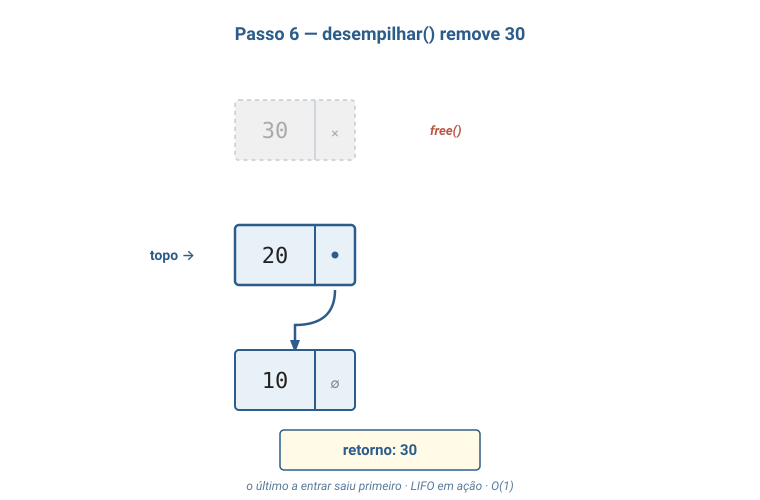
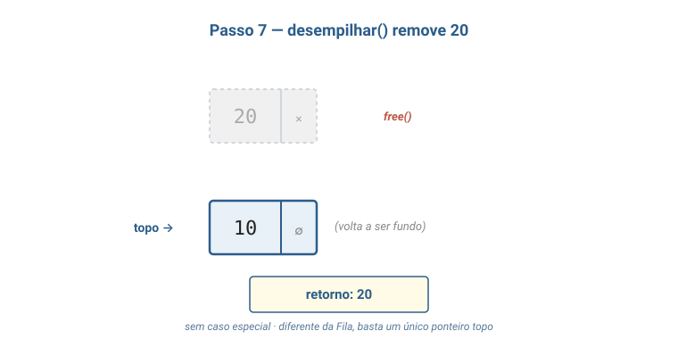

Aula 04
LIFO · o gêmeo da Fila
Aula de implementação — mesma família da Fila, política oposta, código ainda mais simples.
Bloco 1
TAD com inserção e remoção em uma única extremidade chamada topo, governada pela política LIFO (Last-In, First-Out).
Onde a Fila tem duas pontas distintas, a Pilha tem uma só.
A estrutura mais simples possível em que a ordem importa — e uma das mais usadas em computação.
Tratamento canônico: Tenenbaum, cap. 2 — "Pilhas"; Sedgewick, Parte 1, cap. 4 — pushdown stacks.
return desempilha.
criar() -> Pilha
empilhar(Pilha, Inteiro) -> Pilha
desempilhar(Pilha) -> Pilha [erro se vazia]
topo(Pilha) -> Inteiro [erro se vazia]
vazia(Pilha) -> Booleanovazia(criar()) = verdadeirovazia(empilhar(P, x)) = falsotopo(empilhar(P, x)) = xdesempilhar(empilhar(P, x)) = P
Compare com a Fila:desenfileirar(enfileirar(F, x)) = enfileirar(desenfileirar(F), x)— lá ox"passa por dentro" da remoção. Aqui, ele simplesmente sai.
| Representação | Vantagem | Custo |
|---|---|---|
Vetor com topo como índice |
Memória contígua; uma única alocação | Capacidade fixa |
Lista encadeada com topo |
Tudo O(1); dinâmica; sem casos especiais | Ponteiro extra (8 B) + 1 malloc por nó |
Tudo no início da lista: empilhar = inserir no início; desempilhar = remover do início.
Não precisa de fim.
empilhar(x): novo nó proximo = topo; topo = novo.desempilhar(): lê topo, salva topo->proximo em topo, libera o antigo.topo(): lê o valor de topo sem mexer.vazia(): topo == NULL.Menos casos especiais que a Fila — não há "primeiro/último elemento" para tratar à parte.
topo == NULL.
topo != NULL
e seguindo proximo a partir do topo chega-se a um
nó cujo proximo é NULL (o fundo).
Comparada à Fila, a Pilha tem menos propriedades a manter porque tem menos estado. É realmente das mais simples estruturas de dados — e uma das mais usadas.
Bloco 2
empilhar).desempilhar).topo.vazia.A regra central: só se mexe no topo. Do meio e do fundo: inacessíveis enquanto não desempilhar tudo em cima.
Parece dura — mas é exatamente isso que torna a Pilha simples e veloz.
E é a estrutura natural para qualquer situação que precisa desfazer na ordem inversa.
Bloco 3
Ciclo completo: criar → 3× empilhar → topo → 2× desempilhar.







Diferente da Fila: não há caso especial para o último elemento — basta um único ponteiro topo.
Bloco 4
Ctrl+Z desfaz a última ação. De novo, a penúltima. De novo, a antepenúltima.
Como o editor sabe? Mantém uma Pilha de ações:
empilhar.desempilhar e reverter.Uma Fila aqui seria desastrosa: começaria desfazendo a primeira ação ("abrir o arquivo"), não a mais recente.
Função A chama B, que chama C:
[ frame de C ] ← topo (executando)
[ frame de B ]
[ frame de A ]
[ ... main ... ]
Cada return desempilha e devolve o controle
a quem chamou.
É literalmente uma Pilha — o nome não é coincidência.
Bloco 5
Bandejas chegam limpas → vão em cima.
Você precisa de uma → pega a do topo.
A pilha cresce por cima quando vêm novas; encolhe pelo topo quando saem. Você nunca vê a do meio.
LIFO literal.
Você termina a refeição → o prato vai em cima.
Quando vai lavar → começa pelo topo (o último colocado).
Última coisa suja, primeira coisa limpa.
Bloco 6
Lista simplesmente encadeada com topo apenas.
pilha.c
Tudo num lugar só: #includes, structs, funções e main().
Em uma aula futura sobre organização de projetos em C, veremos como dividir uma TAD empilha.h+pilha.c(separação interface / implementação). Por enquanto, manter tudo num arquivo facilita ler de cima a baixo.
pilha.c — includes e structs#include <stdio.h>
#include <stdlib.h>
// Cada elemento da pilha vira um No.
typedef struct No {
int valor;
struct No* proximo;
} No;
// A pilha guarda apenas o topo.
typedef struct Pilha {
No* topo;
} Pilha;
Pilha* pilha_criar(void) {
Pilha* p = malloc(sizeof(Pilha));
if (p == NULL) {
printf("erro: memoria insuficiente\n");
exit(1);
}
p->topo = NULL;
return p;
}pilha_empilharvoid pilha_empilhar(Pilha* p, int valor) {
No* novo = malloc(sizeof(No));
if (novo == NULL) {
printf("erro: memoria insuficiente\n");
exit(1);
}
novo->valor = valor;
// O proximo do novo no e' o antigo topo (que pode ser NULL
// se a pilha estava vazia — sem caso especial!).
novo->proximo = p->topo;
p->topo = novo;
}
Note: nenhum if para diferenciar pilha vazia ou não.
pilha_desempilharint pilha_desempilhar(Pilha* p) {
if (pilha_vazia(p)) {
printf("erro: pilha vazia\n");
exit(1);
}
No* removido = p->topo;
int valor = removido->valor;
// O topo "afunda" um nivel. Se removido era o ultimo,
// removido->proximo era NULL e topo vira NULL — sem caso especial.
p->topo = removido->proximo;
free(removido);
return valor;
}topo, vazia, destruirint pilha_topo(Pilha* p) {
if (pilha_vazia(p)) {
printf("erro: pilha vazia\n");
exit(1);
}
return p->topo->valor;
}
int pilha_vazia(Pilha* p) {
return p->topo == NULL;
}
void pilha_destruir(Pilha* p) {
No* atual = p->topo;
while (atual != NULL) {
No* prox = atual->proximo;
free(atual);
atual = prox;
}
free(p);
}main() — programa demonstrativoint main(void) {
Pilha* p = pilha_criar();
pilha_empilhar(p, 10);
pilha_empilhar(p, 20);
pilha_empilhar(p, 30);
printf("Topo da pilha: %d\n", pilha_topo(p));
printf("Desempilhando: ");
while (!pilha_vazia(p)) {
printf("%d ", pilha_desempilhar(p));
}
printf("\n");
pilha_destruir(p);
return 0;
}
A main() fica no mesmo pilha.c, ao final do arquivo.
gcc -Wall -Wextra -o pilha_demo pilha.c
./pilha_demoSaída:
Topo da pilha: 30
Desempilhando: 30 20 10
Compare com a Fila: 10 20 30.
Mesma representação (lista encadeada),
resultados opostos — porque o contrato é diferente.
O comportamento observável é definido pelo TAD, não pela estrutura.
Bloco 7
Pilha vazia. Sequência:
emp(7), emp(3), emp(11),
desemp, emp(5), topo,
desemp, desemp.
Estado (topo → base) e retorno por operação.
emp(7) → [7]emp(3) → [3, 7]emp(11) → [11, 3, 7]desemp → [3, 7] · retorna 11emp(5) → [5, 3, 7]topo → [5, 3, 7] · retorna 5desemp → [3, 7] · retorna 5desemp → [7] · retorna 3pilha_imprimir
Imprime [30, 20, 10] do topo para a base, ou [] se vazia.
Sem usar desempilhar.
void pilha_imprimir(const Pilha* p) {
printf("[");
for (No* a = p->topo; a != NULL; a = a->proximo) {
printf("%d", a->valor);
if (a->proximo != NULL) printf(", ");
}
printf("]\n");
}
parenteses_balanceados(s) retorna true se
(, [, { estão pareados e aninhados.
Ex.: "(a+b)*[c-d]" → true;
"({a)})" → false; "((" → false.
bool parenteses_balanceados(const char* s) {
Pilha* p = pilha_criar();
for (int i = 0; s[i]; i++) {
int abre = abre_para_codigo(s[i]);
int fecha = fecha_para_codigo(s[i]);
if (abre) pilha_empilhar(p, abre);
else if (fecha) {
if (pilha_vazia(p) || pilha_desempilhar(p) != fecha) {
pilha_destruir(p); return false;
}
}
}
bool ok = pilha_vazia(p);
pilha_destruir(p);
return ok;
}
inverter_string(s) modifica a string in-place.
Compare custo de tempo e espaço com a versão "dois índices".
void inverter_string(char* s) {
Pilha* p = pilha_criar();
int n = 0;
while (s[n]) { pilha_empilhar(p, (int) s[n]); n++; }
for (int i = 0; i < n; i++) s[i] = (char) pilha_desempilhar(p);
pilha_destruir(p);
}Tempo: O(n). Espaço: O(n) extra (a pilha). Versão "dois índices" troca pontas em O(1) extra — preferível em produção. Aqui o ponto é mostrar LIFO.
Implemente uma Fila usando apenas
duas pilhas (P_in e P_out).
enfileirar(x) → empilha em P_in.desenfileirar() → se P_out vazia, transfere tudo de P_in para P_out (LIFO de LIFO = FIFO!); depois desempilha P_out.
Análise amortizada: cada elemento atravessa P_in→P_out no máximo uma vez. Custo amortizado O(1).
static void transferir_se_preciso(Fila2P* f) {
if (pilha_vazia(f->out)) {
while (!pilha_vazia(f->in))
pilha_empilhar(f->out, pilha_desempilhar(f->in));
}
}
int fila2p_desenfileirar(Fila2P* f) {
transferir_se_preciso(f);
return pilha_desempilhar(f->out);
}
Implementação completa em aula04_pilha.md.
Leituras complementares:
Já temos lista, fila e pilha. Próximo passo: outras estruturas lineares, buscas e ordenações.